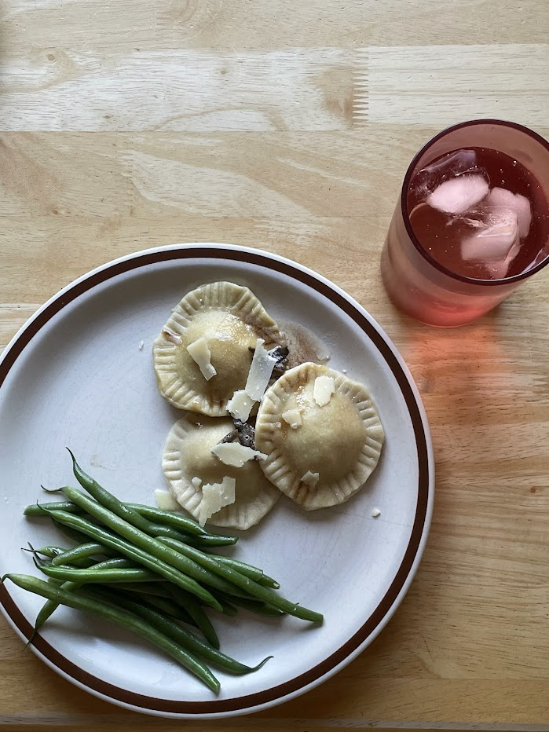

Squash and sage ravioli

Ravioli with green beans and ice water
Ingredients
- Butternut squash
- Flour
- Eggs
- Butter
- Sage
Instructions
Cut butternut squash in half and remove seeds, then roast it in the oven until it's soft and partly carmelized. Scoop it out of the skin and mash it until smooth, but don't blend it.
Serving suggestion
Garnish with freshly ground black pepper and thin shavings of parmesan or manchego cheese.